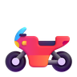
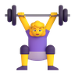

Academic ecosystem × Business development
王聪聪
Nicole Wang
在学者与产业之间做连接。I connect researchers with industry.


Now
正在关注Currently exploring
学者、机构与产业在这些领域的合作How researchers, institutions and industry work together in these fields
- 大模型专家网络Expert networks for LLMsLLM
- AI4SAI for ScienceScience
- 具身智能Embodied AIRobotics
- AI4EduAI for EducationEducation
从交易运营，到学术出版，再到 AI4SFrom transaction operations to academic publishing to AI for Science
Experience2015 — 2019方源房地产咨询Fangyuan Real Estate Consulting交易顾问Transaction Consultant
交易全流程运营，经纪人培训、银行对接与公证业务
End-to-end transaction operations; broker training, bank partnerships and notarization
2019 — 2024MDPIEditor & Team Leader
全球学者合作与期刊运营，带团队
Global researcher collaboration and journal operations; team leadership
2025东壁科技数据dbdata市场部商务经理Business Development Manager
拓展高校与科研机构客户，方案撰写与商务谈判
Developed university and research-institution clients; proposals and negotiation
2026 — 现在2026 — nowAudax Lab学术生态负责人Head of Academic Ecosystem
搭建学者池与企业需求池，撮合学者与企业合作
Built the researcher pool and the company demand pool; matched researchers with companies
找到对的学者，组织成长期合作
Finding the right researchers and building lasting collaborations
- 学者识别与分层
- 专家网络搭建
- 学术项目策划
- Scholar profiling
- Expert networks
- Research programs
经历WhereMDPI · Audax Lab
把机构客户从线索推进到签约
Taking institutional clients from first lead to signed deal
- ToB 客户拓展
- 方案与谈判
- 客户台账
- B2B prospecting
- Proposals and negotiation
- Pipeline management
经历Wheredbdata · Audax Lab · 方源Fangyuan
借助 AI 工具，自己搭运营系统
Building my own operating tools with AI
- 学者企业自动匹配
- 运营看板
- 学者社区展示站
- Auto-matching
- Ops dashboards
- Community site
经历WhereAudax Lab